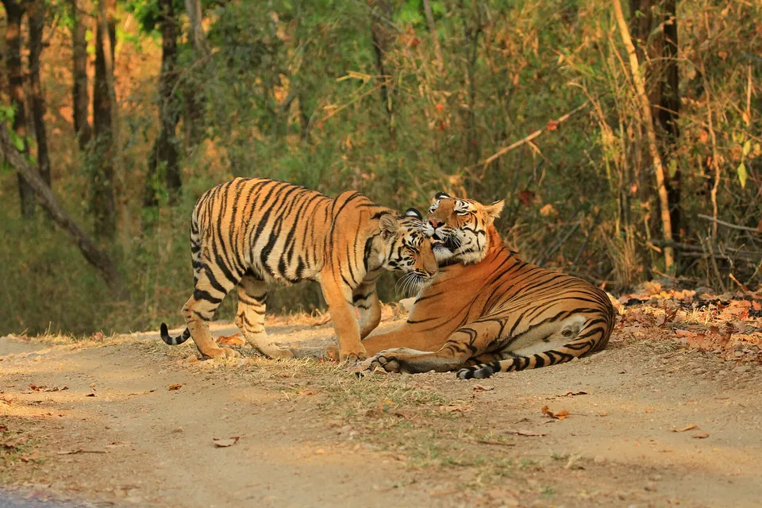

Home › Blog › How many big cats are left in the wild?
How many big cats are left in the wild?
On the latest IUCN Cat Specialist Group figures there are about 3,700 to 5,600 wild tigers excluding cubs, roughly 7,400 to 8,000 snow leopards, about 6,500 mature cheetahs, about 22,000 to 25,000 lions in Africa plus about 670 in India, and 57,000 to 64,000 jaguars in the Amazon alone. There is no reliable global count for leopards. These are estimates with wide error margins.

Latest estimates by species
| Species | Estimate | What is counted | IUCN status |
|---|---|---|---|
| Tiger | 3,726 to 5,578 | Individuals excluding cubs (about 3,140 mature) | Endangered |
| Cheetah | About 6,517 mature (about 7,100 adults and adolescents) | From Durant et al. 2017 | Vulnerable |
| Snow leopard | 7,446 to 7,996 | All individuals (2,710 to 3,386 mature) | Vulnerable |
| Lion | About 22,000 to 25,000 in Africa; about 670 in India | Adults and subadults (Africa 2025; India 2020) | Vulnerable |
| Jaguar | 57,000 to 64,000 in Amazonia | About 89% of the total population | Near Threatened |
| Leopard | No reliable global estimate | Densities from about 1 to over 30 per 100 km² depending on area | Vulnerable |
All figures from IUCN SSC Cat Specialist Group species summaries, which draw on IUCN Red List assessments and the studies they cite.
Why the numbers are uncertain
Big cats are secretive, widely spread and often live at low densities in difficult terrain, so nobody counts them one by one. Researchers estimate numbers from camera trap surveys that identify individuals by their markings, from tracks and signs, from genetic sampling of droppings, and from occupancy models that estimate how much habitat is used. Results from surveyed areas are then extrapolated to similar habitat elsewhere. Methods differ by species and region, and large areas, such as parts of the Sahara or central Africa, have little survey data.
That is why estimates come as ranges and why figures can shift sharply when better data arrive. The snow leopard is a good example: global estimates before 2003 were around 4,000 to 6,500, while the most recent is 7,446 to 7,996. That rise reflects more and better surveys at least as much as any real change in numbers.
Total, adult or mature: read the label
IUCN Red List assessments focus on mature individuals, meaning adults capable of breeding, because they determine a population's future. That figure is often much lower than the total. For snow leopards, the mature estimate of 2,710 to 3,386 is well under half of the total estimate. When comparing species, check whether a figure counts all animals, adults only or mature breeders.
Which big cat is the rarest?
By headline number, tigers and snow leopards are the scarcest of the six species, each with only a few thousand mature adults. By IUCN category the tiger is the only one listed as Endangered at species level.
Some populations are far rarer than the species totals suggest:
- Asiatic cheetah: fewer than 50 mature individuals, only in Iran. Critically Endangered.
- Jaguars of Brazil's Atlantic Forest: about 200 adults, plus or minus 80.
- Asiatic lion: about 670 adults and subadults in 2020, all in one landscape in Gujarat, India.
- Amur leopard: a single small population in the Russian Far East and neighbouring northeast China.
- West African lions: mostly in populations of fewer than 50, with the largest, about 187 lions, in the W Arly Pendjari complex.
Are big cat numbers going up or down?
Mostly down, with some bright spots. African lions fell from about 33,000 in 2006 to about 25,000 in 2018 on IUCN Cat Specialist Group figures, though populations in southern Africa are stable or increasing. Of the cheetah subpopulations whose trends could be assessed, 14 of 18 were declining. Leopard range shrank by 11 percent between 2016 and 2023. Tigers have lost most of their range over the past century, yet the 2025 Green Status assessment found that conservation has prevented even greater losses, and India's Asiatic lions have grown steadily from a tiny remnant over the past century. See big cat conservation for what is driving these trends and what helps.
Cite this page
APA: BigCatWise. (2026, October 8). How many big cats are left in the wild?. Joshua Israel Ventures LLC. https://bigcatwise.com/blog/how-many-big-cats-are-left.html
MLA: "How many big cats are left in the wild?." BigCatWise, Joshua Israel Ventures LLC, 8 Oct. 2026, bigcatwise.com/blog/how-many-big-cats-are-left.html.
Chicago: BigCatWise. "How many big cats are left in the wild?." Joshua Israel Ventures LLC. Last modified October 8, 2026. https://bigcatwise.com/blog/how-many-big-cats-are-left.html.
Please check the date you accessed the page and adjust to your teacher's or journal's style guide.
Sources
- IUCN SSC Cat Specialist Group: Tiger
- IUCN SSC Cat Specialist Group: Lion
- IUCN SSC Cat Specialist Group: Leopard
- IUCN SSC Cat Specialist Group: Jaguar
- IUCN SSC Cat Specialist Group: Cheetah
- IUCN SSC Cat Specialist Group: Snow leopard
- Durant et al. (2017) The global decline of cheetah and what it means for conservation, PNAS
- IUCN Red List of Threatened Species
Figures are rounded summaries of the sources above. Wild populations are hard to count, so estimates change as new surveys are published.